모드는 무엇인가요
모드는 Claude Code 위에 덧붙이는 플러그인이에요. 아래 그림이 영상이 설명하는 모양을 잘 보여 줘요. 가운데 채팅창의 입력란 바로 위에 'Review' 버튼이 달린 한 줄 막대가 붙고, 오른쪽에는 'ON THE SIDE'라는 옆 패널이 열려 있어요. 모드는 이 두 자리 중 하나에 나타나요.
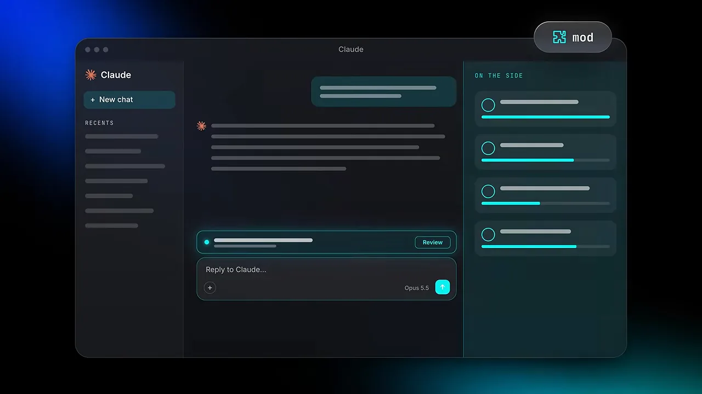
모드마다 맡은 장면이 정해져 있어요. 긴 메시지를 보낼 때, 하위 작업이 돌 때, 파일을 고친 뒤처럼요. 겉모습만 바꾸는 게 아니라 Claude가 일하는 방식도 바꿔요. 그리고 코드를 직접 쓸 필요가 없어요. 원하는 기능을 평범한 영어 문장으로 설명하면 Claude가 모드를 만들어 줘서, 사람마다 자기만의 Claude Code를 갖게 돼요.
발표자의 모드 일곱 개를 작업 흐름 위에 놓으면 아래처럼 돼요. 보내기 전, 일하는 동안, 고친 뒤, 다음 채팅과 다음 번까지 한 바퀴를 다 덮어요.
모드마다 무엇을 하는지 한눈에 비교하면 이래요. 크레딧 칸은 발표자가 직접 말한 것만 적었어요.
| 모드 | 언제 나타나요 | 무엇을 해요 | 크레딧 |
|---|---|---|---|
| Brain Dump | 긴 메시지를 보낼 때 | 목표·사실·요청으로 정리하고 꼭 필요할 때만 질문해요 | 언급 없음 |
| Team Tracker | 서브에이전트가 돌 때 | 도우미마다 하는 일, 경과 시간, 비용을 옆 패널에 보여 줘요 | 무료 |
| Usage Meter | 항상, 입력란 위 한 줄 | 채팅이 찬 정도와 한도를 보여 주고, 대화가 식으면 경고해요 | 무료 |
| Effort Picker | 메시지를 보내기 전 | 할 일에 맞는 effort를 추천해요. 바꾸는 건 내가 눌러서 해요 | 언급 없음 |
| Replay Theater | 파일을 고친 뒤 | 옛 버전과 새 버전의 차이를 하나씩 보여 줘요 | 언급 없음 |
| Handoff | handoff라고 칠 때 | 지금 맥락을 눌러 담아 새 채팅으로 넘겨요 | 언급 없음 |
| Reflect | "하지 마" 같은 지적을 할 때 | 그 지적을 영구 규칙으로 저장할지 물어요 | 언급 없음 |
긴 말을 정리해 주는 Brain Dump
발표자는 새 일을 시작할 때 버튼 하나로 음성을 녹음해서 길게 설명해요. 어떨 땐 깔끔하지만, 어떨 땐 말이 사방으로 흩어져요. 그래서 만든 첫 모드가 Brain Dump예요. 긴 메시지를 보내면 잠깐 붙잡고, 전체를 읽어 정리한 뒤, 해석이 갈리는 부분만 물어보고, 확인할 수 있는 정리본을 돌려줘요.
한 문장으로 만들어요
아래 화면이 모드를 만드는 장면이에요. 맨 위 말풍선이 요청이에요. "긴 메시지가 오면 붙잡아서 목표(goal), 사실(facts), 요청(asks)으로 나누고, 두 갈래로 갈릴 수 있을 때만 질문을 최대 세 개 해 줘." 그 아래 체크 표시 네 줄이 Claude가 한 일이에요. plugin.json과 hooks/register.tsx를 쓰고, claude plugin validate로 검사한 뒤 이 채팅에서 켰어요.
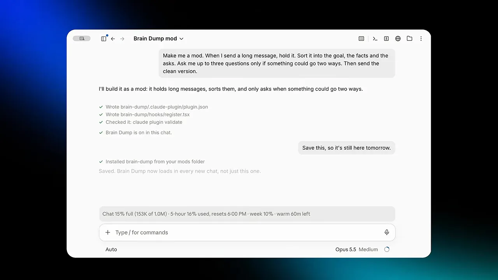
화면 아래쪽을 보면 발표자가 "내일도 남아 있게 저장해 줘"라고 말하고, Claude가 모드 폴더에 설치했다고 답해요. 직접 만들면 이렇게 승인을 몇 번 요청받아요. 저장한 모드는 모든 세션에 남고, 저장하지 않은 채 채팅을 닫으면 사라져요.
정리본과 질문
새 세션에 웹사이트 이야기를 길게 쏟아붓자 Brain Dump가 정리본을 돌려줘요. 아래 화면 위쪽 회색 줄은 원래 말 중 사실에 해당하는 부분이고, 굵은 'Asks' 아래 1~6번이 요청을 정리한 목록이에요. 그 아래 두 줄이 해석이 갈리는 질문이에요. "이 사이트에서 무엇을 파나요?", "코드로 만들까요, 직접 고칠 수 있는 노코드 도구로 만들까요?" 답을 적거나 비워 두고 Send를 누르면 돼요.
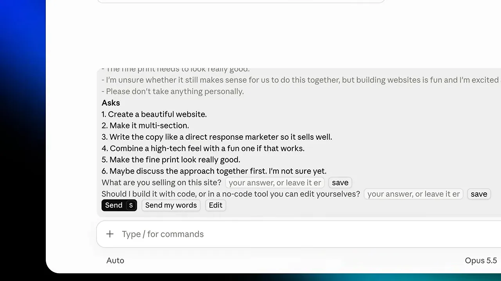
발표자는 예외도 하나 넣었어요. 영상 편집 피드백은 타임스탬프가 줄줄이 달려서 길지만 횡설수설은 아니에요. 그래서 이런 메시지는 질문 없이 번호만 붙여 그대로 처리하게 했어요. 발표자는 이 모드를 "나로부터 Claude를 지키려고" 만들었다고 해요.
작업과 사용량을 보여 주는 두 모드
Team Tracker — 도우미가 뭘 하는지 보여요
큰 작업을 맡기면 Claude는 여러 서브에이전트로 나눠 돌려요. 그런데 각자 무엇을 하는지, 혹시 멈춘 건 아닌지 알 수가 없어요. 발표자는 아래처럼 한 문장으로 요청해서 Team Tracker를 만들었어요. 작업 진행 막대를 보여 주고, 옆 패널에 보낸 도우미마다 하는 일, 돌아간 시간, 대략의 비용을 띄워 달라는 내용이에요.
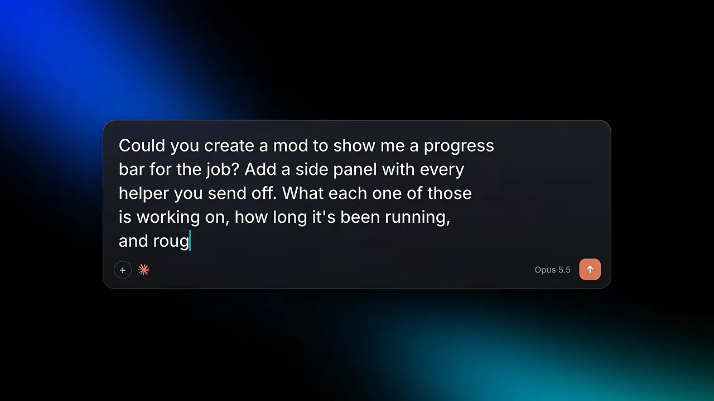
이 모드는 지켜보고 그리기만 해요. Claude는 서브에이전트가 얼마나 걸리고 얼마가 드는지 이미 알고 있으니, 그걸 보여 주기만 하면 돼요. 그래서 발표자는 크레딧이 들지 않는다고 말해요. 반대로 Claude가 원래 하지 않던 일을 시키는 모드는 평소 요금제 사용량을 써요.
아래가 실제 패널이에요. 맨 위 초록 막대 옆에 '1 of 4 done'이 있고, 도우미 네 개가 영상 한 편씩 뜯어봐요. 세 개는 2분 넘게 돌고 있고, 맨 아래 Sirio 영상 도우미만 1분 59초, 120만 토큰, 약 0.95달러로 끝났어요. 마지막 굵은 줄이 전체 작업 합계예요.
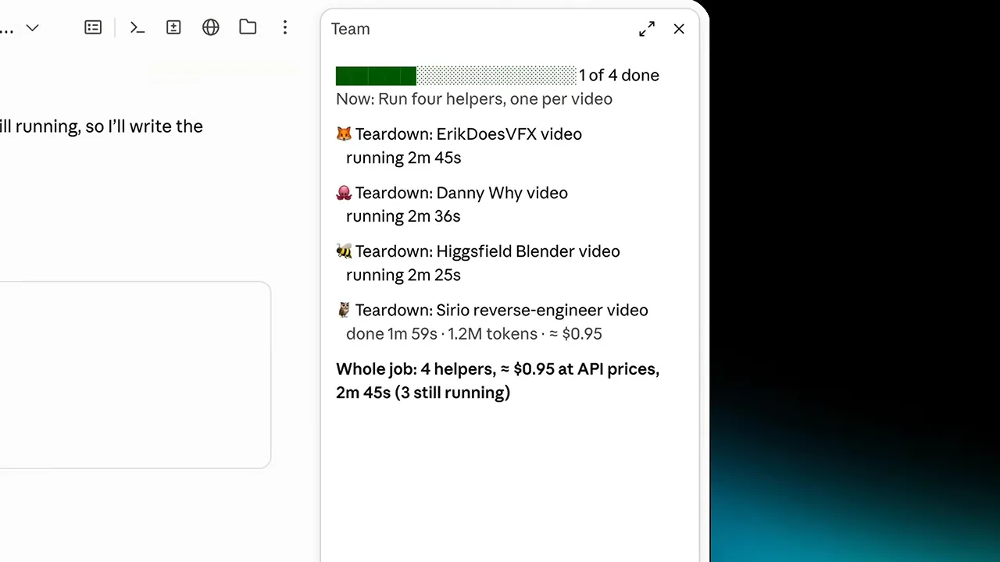
Usage Meter — 대화가 식으면 알려 줘요
발표자는 진짜 중요한 숫자는 한도까지 얼마나 남았느냐라고 해요. 그리고 많은 사람이 모르는 사실 하나를 짚어요. Claude는 지금 하는 일을 약 1시간 동안 기억해요. 점심 먹고 한 시간 넘게 지나 돌아오면 Claude는 대화 전체를 다시 읽고, 그만큼 토큰을 써요.
Usage Meter는 입력란 위 한 줄이에요. 평소에는 'Chat 13% full (126K of 1.0M)'처럼 채팅이 얼마나 찼는지 보여 줘요. 아래 화면처럼 대화가 식으면 경고로 바뀌어요. "36분 전에 식었고, 보내면 약 126K 토큰을 다시 읽어요"라는 문장 아래에 그래도 보내기(Send anyway), 새로 시작(Start fresh), 취소 버튼이 있어요. 끝의 'cold' 글자가 식은 상태 표시예요.
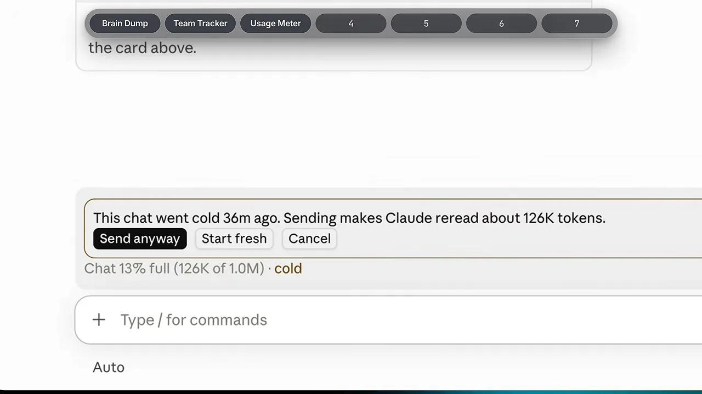
작업마다 effort를 고르는 Effort Picker
발표자가 찾은, 한도에 덜 걸리는 가장 좋은 방법은 모든 일에 같은 '두뇌 힘'을 쓰지 않는 거예요. Claude는 모델을 고를 수 있고, 모델 안에서도 effort 수준을 고를 수 있어요. 아래 화면이 그 메뉴예요. 오른쪽 목록에서 모델(Opus 5.5, Fable 5.1, Sonnet 5.5, Haiku 5.5)을, 왼쪽 목록에서 Low부터 Ultracode까지 effort를 골라요. Medium 옆에는 'Recommended' 표시가 있어요.
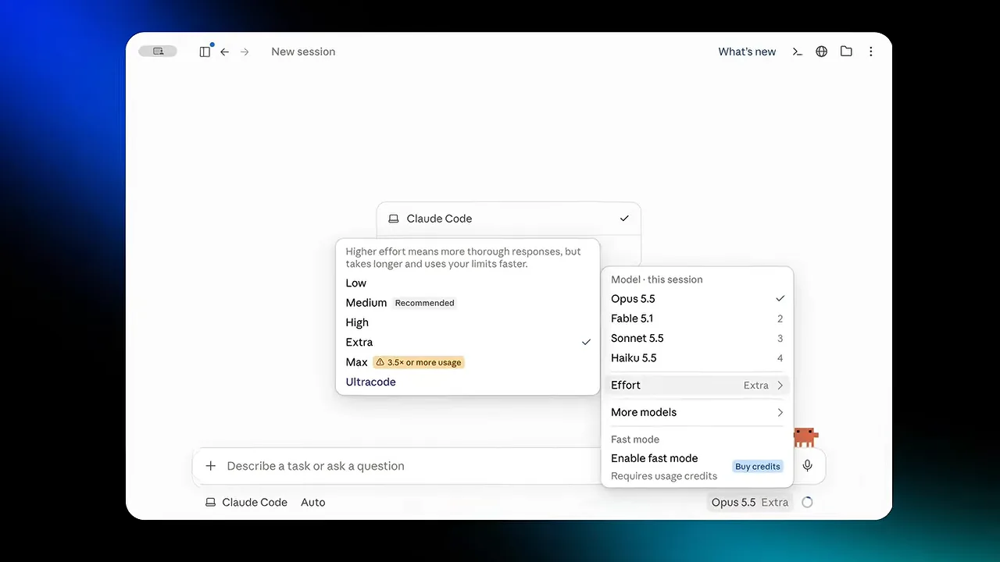
그러면 쉬운 일엔 힘을 너무 많이, 어려운 일엔 너무 적게 쓰게 돼요. 발표자의 비유로는, 디자이너가 브랜드 가이드라인 전체를 잡을 때와 전단지 하나를 살짝 고칠 때 같은 힘을 쓰지 않는 것과 같아요.
Effort Picker는 Anthropic이 낸 글 한 편을 바탕으로 만들었어요. 아래 화면의 'Choosing a Claude model and effort level in Claude Code'예요. 오른쪽 정보를 보면 Best practices 분류, 작성자 Lydia Hallie, 2026년 7월 7일 글이에요.
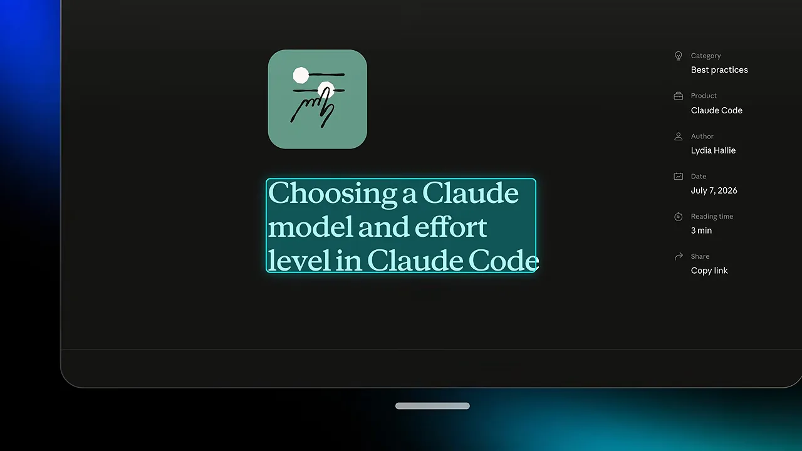
이 모드는 메시지를 보내기 전에 할 일을 읽고 알맞은 effort를 추천해요. 다른 모델을 추천하기도 해요. 하지만 모델을 스스로 바꾸지는 않아요. 추천을 한 번 눌러 적용하는 건 사람 몫이에요. 발표자는 이렇게 하면 월 20달러 Pro 요금제를 100달러 Max 사용자처럼 쓸 수 있다고 말해요.
데모는 같은 채팅에서 두 번 기어를 바꿔요. "렌더 파일 어디 저장했지?" 같은 짧은 질문에는 low가 추천돼서 몇 초 만에 답이 와요. 발표자 말투로 대본을 고치는 일에는 high가 추천돼요. 설정은 한 번도 직접 건드리지 않았어요.
고친 뒤와 다음 번을 챙기는 세 모드
Replay Theater — 무엇이 바뀌었는지 보여 줘요
Claude가 파일을 고치면 결과는 완성돼 보여요. 하지만 옛 버전과 무엇이 다른지는 알 수 없어서, 파일을 열고 차이를 찾아다녀야 해요. 가끔은 바꾸라고 하지 않은 곳까지 바뀌어 있어요.
이 모드는 Anthropic이 직접 만들었어요. 아래 화면이 그 저장소예요. 경로가 anthropics / claude-code-playground / claude-code / mods / replay-theater이고, README 첫 줄은 "Claude가 마지막 턴에 한 파일 수정을 diff 하나씩 넘겨 보게 해 주는 모드"라고 설명해요. 왼쪽 파일 목록에는 같은 폴더에 blast-radius와 token-weather라는 다른 예시 모드도 보여요.
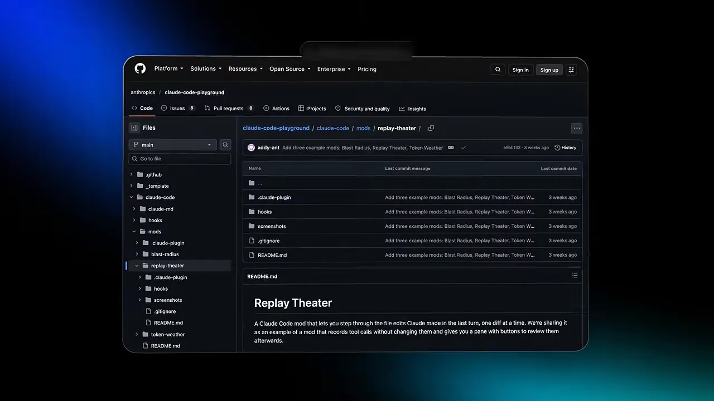
대본을 고치게 한 뒤 입력란 위에 'Claude changed 13 things in 1 file'과 Replay 버튼이 떠요. 누르면 오른쪽에 Replay 패널이 열려요. 아래 화면 맨 위 'Change 1 of 13'이 지금 보는 변경의 순번이에요. 빨간 취소선이 지운 줄, 초록 글씨가 새로 쓴 줄이에요.
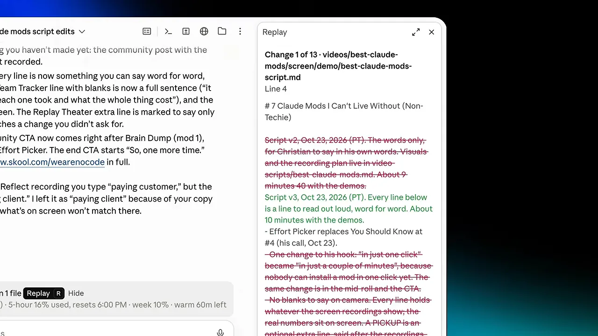
Handoff — 맥락을 새 채팅으로 넘겨요
대본, 영상 편집, 고객 발표 자료처럼 같은 걸 여러 번 고치면 채팅이 금방 길어져요. 채팅이 너무 길어지면 Claude가 앞 내용을 잊기 시작해요. Handoff는 한 스레드의 맥락을 눌러 담아서 다른 스레드로 넘겨요.
아무 스레드에서 handoff라고 치면 새 채팅이 열려요. 아래 화면이 그 새 채팅이에요. 첫 메시지가 .claude/handoffs/ 폴더의 인계 메모를 읽고 이어 가라는 내용이고, Claude는 끝난 것(Done), 다음 할 것(Next), 확실하지 않은 것(Unsure)으로 정리해서 답해요. 아래쪽 줄을 보면 채팅이 2%(21K)만 차 있어요. 앞 채팅은 15%였어요.
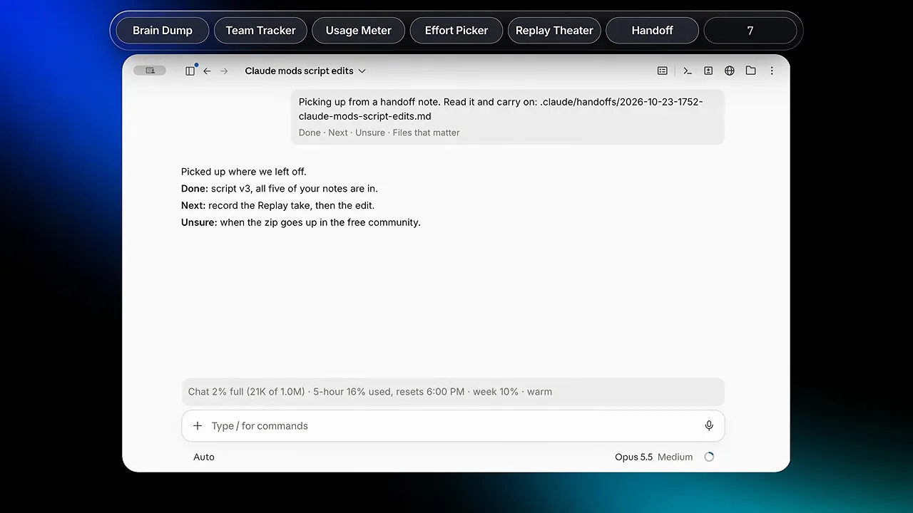
Reflect — 반복되는 지적을 규칙으로 남겨요
Handoff가 기억하는 건 지금 하는 작업의 맥락뿐이에요. 나라는 사람이나, 백 번 지적한 것까지는 기억하지 못해요. 그래서 같은 작업을 할 때마다 같은 피드백을 반복하고, 다음 번에도 같은 실수를 보게 돼요.
Reflect는 채팅에서 "절대 이러지 마", "그거 그만해" 같은 말을 하면 나타나요. 아래 화면에서 발표자가 'Never call it a pilot. It's a paying customer.'(pilot이라고 부르지 마, 돈 내는 고객이야)라고 보내자, 입력란 위에 'Save as a rule?' 띠가 생겼어요. Memory, Copy rules, No thanks 버튼 중 하나를 고르면 돼요.
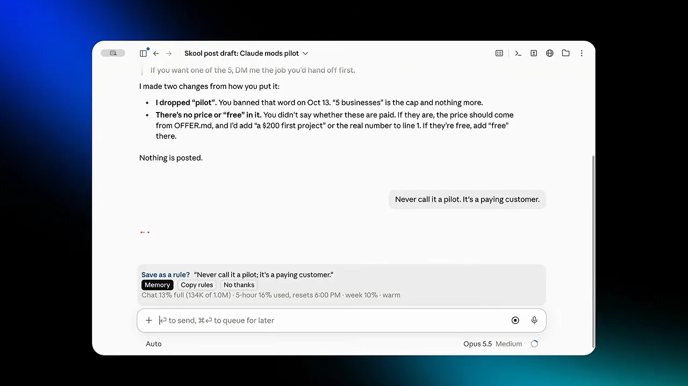
발표자는 이 모드를 가장 값지게 봐요. 좋은 결과가 어떤 모습인지는 그 일의 전문가인 내가 알아요. 그 피드백을 AI(Artificial Intelligence)에 계속 쌓아 줘야 매번 내가 기대하는 수준의 결과를 같은 방식으로 얻는다는 거예요. 발표자는 자기 스킬도 모두 이렇게 다듬는다고 해요.
This is the best way to get exactly what you want from AI.
AI에서 원하는 걸 정확히 얻는 가장 좋은 방법이에요.
— 영상 07:39